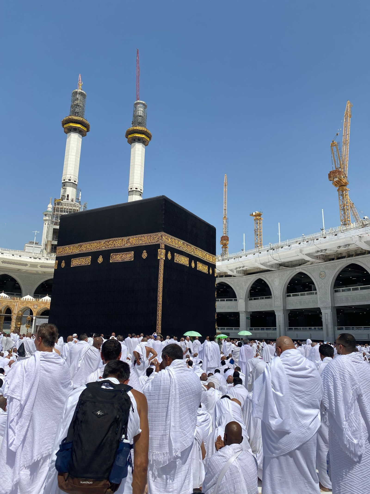

Umrah · Ihram Rules
Ihram Rules — What to Wear & What to Avoid

Ihram is both a sacred state and the clothing pilgrims wear for Hajj and Umrah. You enter it at the Miqat with the intention (niyyah) and the Talbiyah, and from that moment a set of rules applies until you exit Ihram. Most mistakes come from the clothing rules, so here they are plainly. If you are preparing for your first journey, start with our Umrah for First-Timers guide, then come back to this page.
For men — two unstitched cloths:
Men wear two pieces of plain, unstitched white cloth: the izar (lower wrap) and the rida (upper sheet).
So: no underwear, no stitched shirts or trousers, no cap or turban — the head stays uncovered — and no socks or closed shoes; open sandals or flip-flops are fine. A belt or money pouch around the waist, a watch and glasses are allowed; they are not clothing.
For women — normal modest dress, face and hands uncovered:
Women wear their normal modest clothes (abaya and hijab). Two things are specific to Ihram: a woman in Ihram must not wear a face veil (niqab) and must not wear gloves (Sahih al-Bukhari 1838). If non-mahram men are nearby, she may screen her face with a loose cloth that does not touch it. Socks and closed shoes are fine for women.
Rules for everyone in Ihram:
- No perfume on the body or clothes — use unscented soap, shampoo and deodorant while in Ihram.
- No cutting hair or nails.
- No hunting.
- No marriage contract, proposal or arrangement while in Ihram.
If you break a rule by mistake:
Do not panic. If it was forgetful or accidental, remove the cause and carry on; scholars say forgetfulness is excused. For a deliberate breach, fidyah is prescribed — fasting three days, feeding six poor people, or offering a sacrifice (Qur'an 2:196). Ask a qualified scholar about your own case rather than guessing.
Practical tips:
- Practise tying the izar at home before you travel; use a belt or safety pins so it cannot slip.
- Choose light white cotton, and pack a spare set — our Umrah Packing List covers what else to bring.
- Carry unscented toiletries from home — scented hotel soap counts as perfume.
- Put your Ihram on before the Miqat, not in the plane aisle at the last minute.
Once you are in Ihram, the rites begin with Tawaf Step by Step. Planning further ahead? See the Hajj 2027 guide for dates and registration, and the Nusuk App Guide for permits and bookings.
Quick questions:
- Can men wear underwear in Ihram? No. Nothing stitched or shaped to the body is allowed for men in Ihram, including underwear.
- Can women wear socks in Ihram? Yes. Socks are allowed for women; only the face veil and gloves are prohibited.
- Can I wear a watch or sunglasses in Ihram? Yes. A watch, glasses, sunglasses and a waist belt/pouch are all allowed.
Sources: Sahih al-Bukhari 1542 — Hadith Unlocked ↗ · Sahih al-Bukhari 1838 · Sahih Muslim 1177